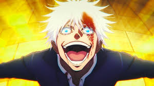

Gojo is a character from the anime Jujutsu Kaisen. He is one of the most powerful characters in the series, and has the attitude to back it up. His most captivating feature would have to be his strikingly blue eyes. Throughout the series, he acts as a mentor to the main cast and helps bail them out of trouble multiple times. Watch the series to find out more!
Here are some reasons why I like Gojo: